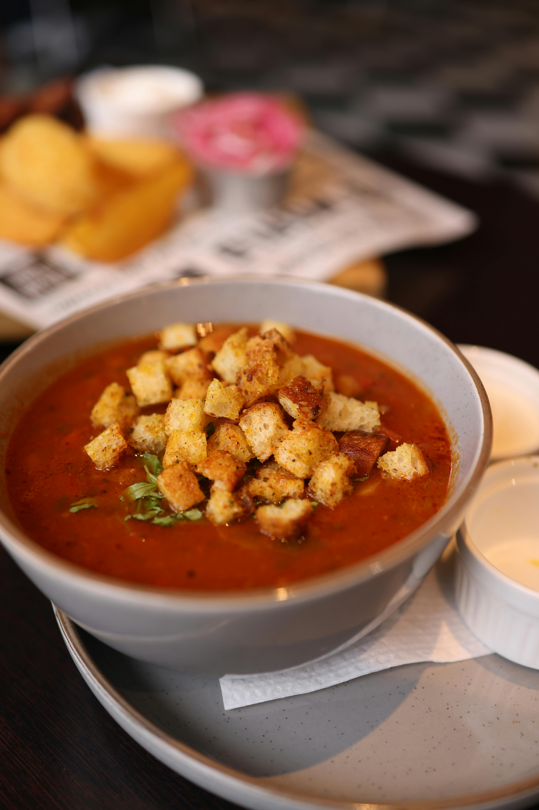

Fiesta Dip

Sweet red peppers and shredded cucumbers add crunch to this low-fat offering
that features several Mediterranean favorite foods: red peppers, garlic, and
thyme. Serve with pita wedges, low-fat crackers or crisp raw vegetables
Ingredients
- 1/2 cup shredded cucumbers
- 1 cup nonfat sour cream
- 1/2 cup minced sweet red peppers
- 1 clove garlic, minced
- 1/2 tsp dried thyme
Instructions
- Squeeze all excess moisture from the cucumbers.
- Place the cucumbers in a small bowl.
- Stir in the sour cream, peppers, garlic, and thyme.
- Transfer to a serving bowl and chill until needed.
Home